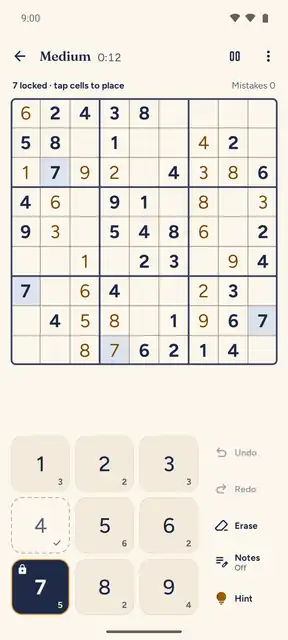
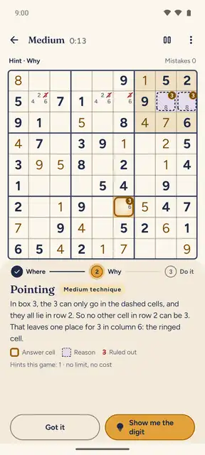

Lantern Sudoku
ألعاب
Lantern Sudoku is a quiet sudoku for short, calm sessions. It has no ads, no account and no game over, and it works fully offline. When you're stuck, a hint lights the next step instead of giving the answer away. You choose how much help you want: • Where to look: the area where the next step is. •
✓ ترخيص مفتوح (GPL-3.0-or-later) · آخر تحديث: 2026-10-15
1.0.1الإصدار
2.4 MBالحجم
GPL-3.0-or-laterالرخصة
Open in Kanzتحميل APK (2.4 MB)
Download APK
SHA-256: c32175dd921bf22167a29d5120ea7154eeea12727c545aaf2d2cd60cbac9843e


تطبيقات تانية لنفس المطوّر (2)
More apps from this developer: io.github.ukpratik
امسح الكود لفتح صفحة التطبيق
Scan to open this app page
لو كنز مش متثبت عندك: نزّل متجر كنز.
Not installed? Get the Kanz store.